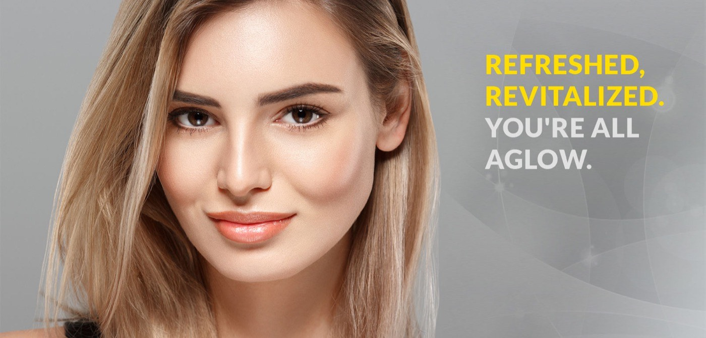
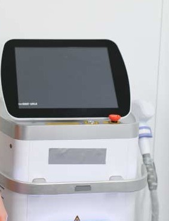

Your face on its
very best day.
A medical spa in Draper run by one nurse practitioner with more than thirty years in medicine. Kelly Lance plans your treatment herself, and it starts with a free consultation.
The consultation is free, in person or virtual. Individual results vary, and a consultation determines whether you are a candidate.
Better one, or better two?
An eye exam never decides for you. It offers two, and you say which is clearer. Aesthetic medicine should work the same way.
One
The overfilled look.
“We’ve all seen the ‘overfilled’ look on social media, and honestly? We’re not fans of it either.”
Two
Your own face, rested.
“We aren’t trying to give you a 20-year-old’s face; we’re trying to give you your face on its very best day.”
Kelly Lance, MSN, APRN, FNP-C, owner and provider.
- Provider
- Kelly Lance,
MSN, APRN, FNP-C - Experience
- More than 30 years
in medicine - Location
- 248 E 13800 S, Suite 3
Draper, Utah - Consultation
- Free, in person
or virtual
The consultation
Nothing is decided
before you sit down.
The practice names the thing people are actually afraid of. “One of the reasons people feel hesitant is the ‘conveyor belt’ feel of some big med spa chains.” What follows is what happens instead, in Kelly Lance’s own published words.
-
The deep-dive consultation
“We sit down, we talk about your life, your budget, and your fears. I want to know what you see when you look in the mirror.”
-
A plan, not a package
“We don’t just sell ‘packages.’ We create a roadmap that is specific to your face and your goals.”
-
Medical oversight
“Because I am a Nurse Practitioner, your safety and medical history are always the top priority.”
-
Restraint, stated plainly
“Our professional, trained and experienced staff are experts in the art of natural looking enhancements. We won’t leave you over-plumped or frozen-faced.”

The provider
One person is
responsible.
Kelly Lance
- MSN
- APRN
- FNP-C
Owner and provider at La Belle Vie Medical Care & Aesthetics. Certified as a Family Nurse Practitioner, with advanced aesthetic training in multiple procedures.
30+ years of medical experience, brought to the practice every day.
“Hi, I’m Kelly Lance. I’m a Family Nurse Practitioner, the owner of La Belle Vie Medical Care & Aesthetics in Draper, and, most importantly, someone who truly gets it.”
“You’re not a ‘patient number’, you’re a neighbor, and we’re going to take care of you like one.”
“My philosophy at La Belle Vie isn’t about changing who you are; it’s about Artistic Restoration.”
“It’s about looking in the mirror and finally seeing the person you feel like on the inside, vibrant, rested, and ready for whatever life throws at you.”
“At the end of the day, we aren’t in the business of needles and lasers, we’re in the business of confidence.”
Degree of intervention
Start with the smallest
thing that works.
Every treatment the practice publishes, ordered by how much it changes. Turn the dial to move up the scale. Nothing here commits you to anything: the consultation decides what, if any of it, suits you.
Baby Botox
“Using tiny amounts of toxin to prevent deep lines from forming.”
Lip Flip
“Uses a tiny bit of Botox to relax the upper lip. It’s subtle, affordable, and a great ‘starter’ treatment.”
Chemical peel, light
A light “lunchtime peel”, or something deeper. Winter is the practice’s preferred window, so you heal away from the intense Draper sun.
IPL Photofacial
“As the light penetrates the skin’s surface, the collagen and blood vessels that lay below the surface will begin to constrict. This reduces and draws out red pigment in the skin as well as reduces the color of dark age spots.”
Hydrating facial
“Our Utah air is brutal. Hydrating facials and IV therapy help replenish the moisture your skin needs to stay resilient.”
Under-eye brightening
“Specialized fillers or PRP that fill in hollow ‘tear troughs’.”
Medical-grade skincare
“The stuff you buy at the grocery store usually stays on the very top layer of your skin. The treatments we do go deeper, reaching the layers where collagen and elastin are actually made.”
IV hydration and B12
“A direct boost of vitamins, minerals, and antioxidants.” Offered alongside vitamin infusions for identified deficiencies.
Botox, Dysport, Xeomin, Jeuveau
“Think of this as a ‘wrinkle relaxer’. We use it to soften the lines that make you look tired or stressed, but we leave enough movement so you can still laugh, frown, and look like a human being.”
Dermal fillers
“We use them to replace the volume that naturally disappears as we age. It’s like putting the stuffing back into a pillow, it just looks smoother and more supported.”
Signature Cheeks
“We don’t want ‘apple cheeks’ that look like golf balls. We want a subtle lift that helps pull up the skin around the mouth.”
Under-eye filler
“A non-surgical treatment using hyaluronic acid to reduce dark circles, hollows, and fine lines… with minimal downtime.”
Microneedling
“This is like a gym workout for your skin. It creates tiny ‘micro-channels’ that tell your body to produce fresh, new skin cells.”
PRP facial
“We use your body’s own rich plasma to trigger collagen production. It’s 100% you, just working a little harder.”
Hand rejuvenation
“The most severe changes in the hands are typically due to loss of tissue volume over the years.” Addressed with Renuva or traditional fillers.
Sclerotherapy
“An innovative procedure that does not require anesthesia and you can immediately resume normal activities”, for spider veins.
Sculptra®
“Injecting biocompatible poly-L-lactic acid (PLLA) into your skin’s deep layers, triggering skin cells to produce more collagen.” Improvements begin about four to six weeks after treatment.
Renuva
“An FDA-regulated, purified adipose (fat) matrix… Renuva acts like a microscopic honeycomb scaffold”, and then “the Renuva matrix completely disappears, leaving behind only your own natural fat.”
PDO thread lift
“PDO threads placed strategically under the skin have been highly effective and a minimally invasive way to improve firmness of the skin.”
CoolSculpting
“For those stubborn pockets of fat that won’t budge at the gym, we can literally freeze them away. No surgery, no needles, just cold science.”
Jawline and chin definition
“A little bit of support in the chin can completely transform a profile, making the neck look tighter and the jawline look sharper.”
Age spot removal, Harmony®XL
“By exposing a pigmented lesion to short pulses of visible light, the temperature in the highly concentrated melanin can be raised sharply, enough to shatter the cells containing the melanin or blood.”
Laser hair reduction, Hair-Free™
Long-term hair reduction using the Hair-Free™ system. “Nearly any part of the body can be treated… including your upper lip, chin, neck, back, and stomach.”
Preventative skin tightening
“Keeping your collagen ‘tight’ now so you don’t have to deal with significant sagging 10 years down the road.”
CO2 laser
“A laser treatment used on all range of skin colors and types to restore skin to its younger texture… smoother, has improved tone and textures, and smaller pores.”
CO2 Lite
“Reduces fine lines, wrinkles, acne scars, and sun spots… with less downtime than regular CO2 laser treatments.”
Profound by Syneron
“The Profound treatment combines micro-diameter needles to deliver focused RF energy deep into your dermis… with 3 to 5 days of downtime.”
Acne scar treatment
“From our highly effective, minimally invasive, treatments to more aggressive treatments for acne and deeply scarred tissue, La Belle Vie determines the best strategy.”
Laser resurfacing
“This is the gold standard for fixing texture and tone. Because your skin will be a little sensitive to light afterward, starting in January or February is a total pro-move.”
Stretch mark and scar treatment
“We use microneedling and specialized serums to help blend scars and stretch marks back into your natural skin tone.”
Comfort
Is it going to hurt?
“We are big fans of ‘comfort first.’ Between medical-grade numbing creams, cooling devices, and a very gentle touch, most of our clients are pleasantly surprised by how easy the process is.”
Will everyone know I had work done?
“Not if we have anything to say about it. Our goal is for people to notice you look great, but not be able to point to why. We aim for ‘Gosh, you look rested’, not ‘Who did your filler?’”

Devices
The equipment is named,
because the name is the specification.
Anyone can promise a result. Fewer will tell you which machine is doing the work, how it works, and how long you will be red afterwards. These are the systems the practice publishes by name.

Harmony®XL
Light treatment used for benign pigmented lesions of cosmetic concern. “The body then replaces these cells with new cells generated by the surrounding untreated area.”
Profound by Syneron
Radiofrequency microneedling for moderate to severe acne scars, using “deep dermal heating” to trigger collagen remodeling.
Hair-Free™
The system used for long-term hair reduction, on the upper lip, chin, neck, back, stomach, legs, underarms and bikini area.
Sculptra®
Poly-L-lactic acid. Treated areas the practice lists: face, jowls, temples, hips and buttocks. Results “often exceed two years in lifespan”, and it “is not a permanent solution for deep wrinkles.”
Renuva
Purified adipose matrix. Over three to six months the treated area gradually smooths. “You might be a little bruised or swollen for a few days, but there is zero major downtime.”
CO2 and CO2 Lite
Resurfacing for texture, tone, pore size, scars, lines and deep wrinkles, in two depths.
Aftercare the practice publishes for Sculptra: avoid strenuous activity for at least 24 hours, and expect “minor bruising or swelling at the injection site, which typically subsides after a few days.”
Medical weight loss
“At La Belle Vie,
we don’t prescribe
Ozempic.”
That is the practice’s own sentence, published twice inside its own weight-loss content. What is offered instead is a guided programme, and support for patients already using medication prescribed elsewhere.
“Ozempic is a tool, not a plan.”
What gets assessed
- Hormone balance
- Metabolism
- Muscle mass
- Stress levels
- Sleep quality
- Nutrition habits
- Past weight-loss attempts
What the programme is built on
Education
“Understanding what’s happening in your body and why.”
Accountability
“Regular check-ins and support throughout your journey.”
Long-term success
“Building habits and health that last, not just losing weight quickly.”
“Medical weight loss is not dieting. It’s not about willpower, restriction, or punishing yourself for existing in your body.”
“I don’t believe in shame, trends, or one-size-fits-all solutions when it comes to weight loss.”
Intimate health
Sexual wellness is
treated as health care.
“Sexual wellness is a vital part of your overall health, confidence, and quality of life.” The practice states that women’s health is approached “with expertise, compassion, and discretion”, in “a supportive, judgment-free environment”. These services are listed here in the same register as everything else on this page.
-
Clitoxin®
A sexual wellness treatment for women that uses “BOTOX® or other FDA-approved neurotoxins off-label to enhance clitoral function and orgasmic response.” The practice describes the mechanism this way: “The neurotoxin works by gently relaxing specific muscles around the clitoris, allowing for increased blood flow and heightened sensitivity.” Developed by Dr. Charles Runels. Typically completed during a short office visit, usually in under one hour, with a topical anesthetic applied for comfort.
-
O-Shot
“A PRP (platelet-rich plasma)-based injection treatment that uses growth factors from your own blood to rejuvenate vaginal and clitoral tissue. After a small blood draw, the platelet-rich plasma is separated and strategically injected into areas associated with sensation, lubrication, and sexual response.” Described by the practice as “a natural, hormone-free option for improving sexual health”. A topical numbing cream is typically applied, and the appointment usually takes less than an hour.
-
Who the O-Shot is discussed for
The practice’s published list: decreased libido; difficulty reaching orgasm; vaginal dryness; pain during intercourse; mild urinary leakage; decreased sensitivity after childbirth or menopause. Its published duration is 12 to 18 months, “though individual results may vary”.
Also published by name, without further detail. Ask about any of them at a consultation.
- Vaginal rejuvenation (FemiLift)
- Breast enhancement
- P-Shot
- Shockwave therapy
- ED Trifecta
- Hormone replacement
Visit
One address,
in Draper.
Published hours
- Monday9:00 a.m. to 6:00 p.m.
- Tuesday9:00 a.m. to 5:00 p.m.
- Wednesday9:00 a.m. to 6:00 p.m.
- Thursday9:00 a.m. to 5:00 p.m.
- Friday9:00 a.m. to 3:00 p.m.
Booking
Book a new appointment
through the practice’s online booking.
Your appointments
is the portal for existing patients.
Free virtual consultation
if you would rather start from home.